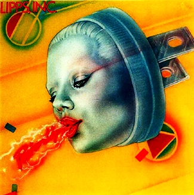
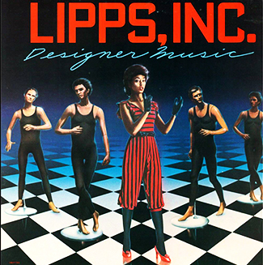
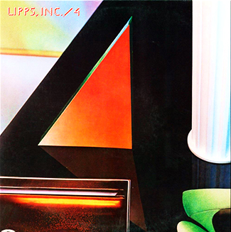

Lipps, Inc.
Toda la información discográfica de la banda
Albums
-
Mouth to Mouth - 1979

- Funkytown - 07:48
- All Night Dancing - 08:19
- Rock it - 05:42
- Power - 08:15
- Funkytown (Single) - 03:10
- All Night Dancing (Single) - 03:10
- Rock it (Single) - 03:19
- Power (Single) - 02:56
-
Pucker Up - 1980
- How Long - 05:50
- Tight Pair - 08:33
- Always Lookin' - 04:36
- The Gossip Song - 03:50
- There They Are - 03:25
- Jazzy - 03:57
-
Designer Music - 1981
- Designer Music - 05:40
- Hold Me Down - 05:25
- The One - 03:42
- The One After - 02:10
- Everybody Knows - 04:36
- I Need Some Cash - 04:57
- Background Singer - 02:23
- Things Take Time - 03:51
-
4 - 1983
- Funk 108 - 04:13
- Crying Over You - 03:42
- Addicted To The Night - 06:46
- On To You - 04:49
- Never Could Be Sorry- 05:06
- Choir Practice - 05:58
- Obsessed - 03:54
- Let's Get Back To The Floor - 06:37
Singles & EPs
| Título | Año | Posición en la tabla de picos | |||||||
|---|---|---|---|---|---|---|---|---|---|
| US | US Dance | US R&B | US AUT | US GER | US NLD | US NOR | US SWE | ||
Definición de cada chart:
|
|||||||||
| Rock it | 1979 | 64 | 20 | 85 | |||||
| Funkytown | 1980 | 1 | 1 | 2 | 1 | 1 | 1 | 1 | 2 |
| Designer Music | 11 | ||||||||
| All Night Dancing | 1981 | 1 | |||||||
| How Long | 4 | 29 | 32 | 30 | 16 | ||||
| Jazzy | |||||||||
| There They Are | |||||||||
| Tight Pair | 1982 | 4 | |||||||
| Addicted To The Night | 8 | 78 | |||||||
| Hold Me Down | 1983 | 11 | 70 | ||||||
| Choir Practice | 8 | ||||||||
| Hit The Deck | 32 | ||||||||
| Does Anybody Know | 1984 | 32 | |||||||
| Power | 1985 | ||||||||
| Gossip Song | |||||||||